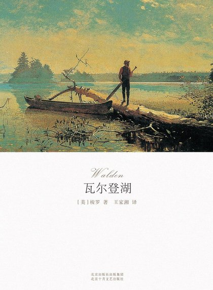
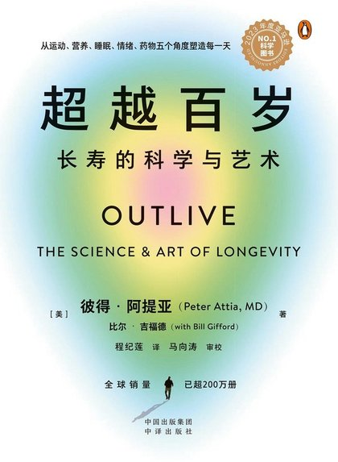

给自己一间
会说话的书房。A study
that talks back.
听一段书，聊一段人生，写下自己的故事。岁月书房与岁月书斋编辑部合作，写给 60 后、70 后的读书人：不用啃完全书，坐下来听人把一本书讲给你听，想到什么就问，想起什么就说。Hear a book, talk about your life, write your own story. Made with our editorial partner for readers born in the 1960s and 70s: no need to finish the whole book. Sit down, let someone tell it to you, ask what you wonder, and say what it brings back.

从这三本开始Three to start with
第一次来，可以先从这三本里挑一本听。书架上还有另外 5 本。New here? Pick one of these three. Five more are on the shelf.


打开一本书，有五个页面Five pages for every book
它是一间书房，不是电子书，也不是测评工具。It is a study, not an e-book reader or a test.
书架The shelf
现在有 8 本可以听。点一本书，看看它讲什么。编辑部选了《2026 年入选书目》，分健康长寿、关系与人生、经典思想、历史社会、旅行与自然、文学与家国六类，共 100 本，会陆续上架。Eight books to listen to now; tap one to see what it is about. The editors' 2026 list adds 100 more across six categories, arriving over time.
氛围Ambience
可以换一幅莫奈、一张星空做背景，再开一点小雨或篝火声。讲解响起时，环境声会自动调小。字号、字重、纸色和深浅色也都能调。Put a Monet or a night sky behind the page and add a little rain or a fire. When the lecture plays, the sounds step back. Text size, weight, paper colour and dark mode are all yours to set.
慢慢写成一本回忆录Slowly, a memoir
讲解里的一个人、一个年份，常常会让人想起自己的事。书房会温和地问一句，你愿意说就说；确认过的记忆卡一张张攒起来，先汇成月度小册，再慢慢整理成一本属于你的回忆录。这通常要一年以上。A person or a year in a lecture often brings back something of your own. The study asks gently, and you say as much as you like. Confirmed memory cards gather into a monthly booklet, and over a year or more, into a memoir that is yours.
想早点出书？联系我们Sooner? Contact us在哪里用Where to read
登录同一个账号，听到哪、记了什么，几个地方都同步。Sign in once; where you stopped and what you kept follow you everywhere.